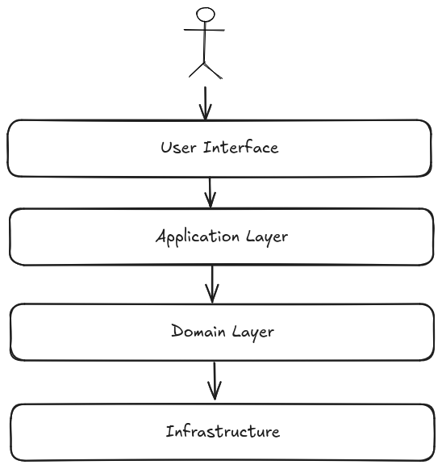

Domain-Driven Design
Domain-Driven Design (DDD) is a software development approach that focuses on generating a deep understanding of the business domain. It is a way of thinking and a set of priorities, aimed at accelerating software projects that have to deal with complex domains. Key concepts of DDD are:
- Ubiquitous language: A language structured around the domain model and used by all team members to connect all the activities of the team with the software.
- Bounded context: A boundary within which a particular domain model is defined and applicable. It is a way to keep the model clean and focused.
- Layers: DDD can be implemented in layers, where the domain model is at the center of the architecture.
- Presentation layer: The user interface, responsible to interact with the application or user.
- Application layer: orchestrates the domain objects to perform the required operations or use cases.
- Domain layer: The core of the application, where the business logic resides.
- Infrastructure layer: The external systems that the application interacts, like persistence, messaging, etc.
